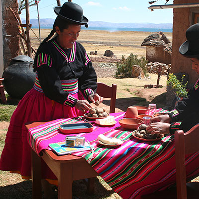
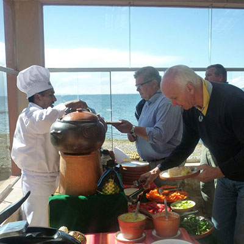
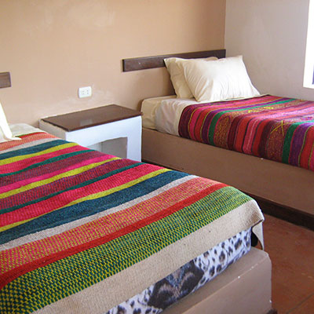
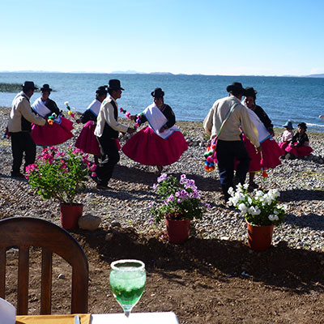

Cusco
City Tour
Valle Sagrado de los Incas
Arequipa
Visita al cañón del colca
Valle del colca
Valle del Colca y Puno
City Tour
Puno
Islas Flotantes del Lago Titicaca
Chullpas de Sillustani
Isla de Anapia y Yuspique
Bolivia
Tiahuanaco y alrededores del lago sagrado
Tours Exclusivos
Taquile, Luquina Chico y los Uros F/D
Taquile, Luquina Chico y los Uros 2d/1n
Blog
Luquina Chico
es una nueva alternativa para realizar turismo en el
lago titicaca
, un lugar placentero al cual debemos viajar. Vive la mejor experiencia con nosotros.
Nombre
E-mail



